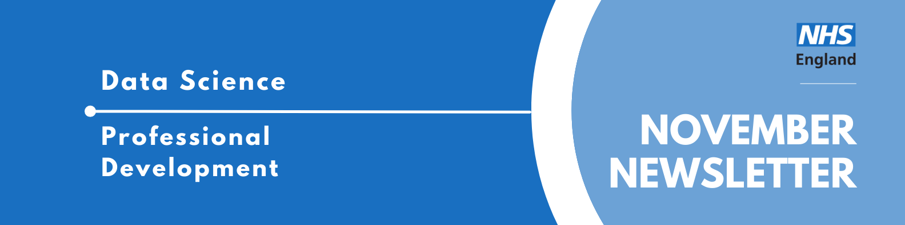

Data Science Community for Health and Care Newsletter November 2025

Welcome to the latest newsletter from the Data Science Community for Health and Care, brought to you by the NHS England Data Science Professional Development Functional Team.
The newsletter team are always happy to receive constructive feedback, and we invite you to send us any contributions you may have.
If you cannot access something of interest to you, please reach out.
Thanks for reading! – newsletter team
Interview with a Data Scientist - Hopping into Data Science
Welcome to another instalment of our “Interview with a Data Scientist” series, where we explore the careers and work of the talented data scientists across our healthcare organisations. We aim to showcase the fantastic individuals who contribute to Data Science within the healthcare sector and provide valuable insights for those considering a career in this field.
This week our interviewee is Sean Aller, a Principal Data Scientist at NHS England. Sean has a diverse background, having transitioned from academia and teaching into healthcare data science, bringing a wealth of experience and a unique perspective to his role. He is about to move on from NHS England to take up a new challenge as a Technical Specialist - Digital Intelligence Exploitation at the Financial Conduct Authority (FCA).
Read more…
How did you end up in data science in your healthcare organisation? What did you do before, and what really sparked your interest in this field?
I actually didn’t pick data science originally. My background started with an undergraduate degree in Biomedical Science at Warwick, followed by a PhD in Systems Biology. My PhD focused on the mathematical modelling of host-virus metabolic interactions; essentially trying to figure out if there is a pandemic, can we find a drug for it by looking at how the virus uses the host’s metabolism? That was where I really got my computer programming background, starting around 2018.
From there, my career path was a series of hops.
Hop 1: I did a post-doc at St George’s Hospital. That was my first experience working in a healthcare setting, tackling lots of random projects over two years. Ultimately, I realised I didn’t really vibe with the academic route.
Hop 2: I moved into teaching at Decoded. I spent about a year and a half teaching a Level 5 data analytics scheme, which really solidified my technical communication skills.
Hop 3: I joined HealthHero, a digital clinic, in a data analyst role. I really enjoyed the actual work there, but the setting wasn’t quite right for me.
Final Hop: That led me to NHS Digital (which later merged with NHS England) as a Data Scientist. It turned out to be the perfect mix of technical work and being back in a public healthcare environment.
Once you joined your healthcare organisation, what was that experience like? What different roles and teams have you been a part of, and how have they shaped your career?
It has been amazing. I sit within the Data Science team and was promoted to Principal Data Scientist during my time here. I have also had the opportunity to do stints with other teams, such as the National Disease Registration Service (NDRS) and Analytical Insights. This allowed me to do data science in a more applied setting, embedded within multidisciplinary teams.
Some of my biggest projects involved clinical and policy work, collaborating directly with clinicians, Subject Matter Experts (SMEs), and academics. Through this, I gained a lot of great soft skills. A prime example was moving from the COVID IDSM work into the Cardiovascular Disease (CVD) Prevent projects (in its DAE, Analytical, UDAL forms). It was effectively half data science work and half working with experts to figure out how things actually function in the real world.
The core of the experience has been taking what the experts know and translating that into a hard data science solution. It is vital to make sure we get that right; working closely with experts is the only way to build something that is genuinely useful.
What are you currently working on? Are there any projects that you’re particularly excited about, or that you feel are making a real difference? What impact are you having?
One of the most exciting things I am working on is actually the Neurodiversity Staff Network. This has been a massive opportunity to advocate and make a difference within the organisation for neurodivergent people. I helped found the Neurodiversity Support Network with a few colleagues, and it eventually became an official staff network during the merger with NHS England.
I have been able to bring that advocacy back into the Data Science team via the Wellbeing team. We are constantly asking ourselves if we are doing things as a team that ensure we are being inclusive. We discuss these topics at away days, and it has led to practical changes like the creation of wellbeing passports.
This has been an area of work that was completely unexpected when I joined as a Data Scientist, but it has allowed for growth in soft skills that have been valuable in every aspect of my work.
Looking back on your time in your healthcare organisations Data Science team, what were the most impactful moments? How do you reflect on that experience now?
From a project perspective, the most impactful moment was working on the first version of the CVD project. That has now turned into a Business As Usual (BAU) product used by the Office for Health Improvement and Disparities (OHID) in the DHSC as part of their monitoring and the CVD prevent ecosystem. It is incredibly rewarding to have a deployed product out there just running and adding value.
On a cultural level, the work on inclusivity has been a highlight. Getting permission to help shape the team to be more inclusive, and having senior NHSE leadership sponsor the Neurodiversity Staff Network, made it go much further than we ever hoped. I feel like I am going to leave a contribution that helps make NHS England a better place for people to work at and be served by.
Reflecting on the experience, I found the HSMA course to be a great learning opportunity. Separately, I made a conscious effort to network with people across the organisation. Being able to learn from people in areas I didn’t even know existed and ask them “what are your pain points around data?” was invaluable. Within the Data Science team itself, I have been able to lead on points of culture. We have a flat structure in terms of cultural leadership that doesn’t value the contributions of higher paid people more, but rather values those who want to make the team a better place to work.
November Analyst X Data Science Huddle
Last week we had our November Analyst X Data Science Huddle!
Ross Taylor presented his work on using geospatial analysis to optimise diagnostic capacity across the NHS South West region.
This project mapped site competition and how easily people across the Southwest can reach key diagnostics; CT, MRI and Endoscopy to ensure new capacity goes where it helps most. This supports the rollout of Community Diagnostic Centres (CDC) by showing who benefits from the Phase 1 CDC placements and identifying future sites for Phases 2 and 3.
Missed the session? Check out the recording and PowerPoint slides here, where you will also find the recordings of previous huddles.
December Analyst X Data Science Huddle
Tuesday 16th December 2025, 14:00 - 15:00, Online
The Data Science Community for Health and Care have organised the next AnalystX Data Science Huddle for December! The session will cover:
- Unlocking Oracle Cloud Infrastructure (OCI) Data Science Region - presented by Oracle
Join Oracle Data Science Leaders, for an in-depth exploration of how the NHS AnalystX community can leverage Oracle Cloud Infrastructure (OCI) Data Science - a robust collaborative platform designed to accelerate analytics and machine learning capabilities for healthcare organisations. OCI Data Science empowers teams to unlock insights in data safely, securely, and efficiently.
This event has been added to our Data Science Community for Health and Care calendar, where you will find the calendar invite to access the event and further information.
If you would like to be invited to future events of ours, sign up to our mailing list!
Events
Lots of exciting things coming up! See the full calendar here, and a small selection below.
Health Data Science Seminar Series: Using data to tackle NHS pressures
Thursday 27th November, 14:00 - 15:30, Online
Join us to learn how by harnessing data, the NHS can target interventions, reduce waste, and deliver sustainable, patient-centered care.
Harnessing data effectively can help improve decision-making, efficiency, and patient outcomes. By turning information into insight, the NHS can target interventions, reduce waste, and deliver more sustainable, patient-centred care.
This series of seminars presents an exciting opportunity to hear about recent developments in health data science, generate ideas and help build the health data science community. It is hosted by the ONS in partnership with Health Data Research UK (HDR UK).
AI+ Research Seminars, October – December 2025
Wedsnesday 3rd December, 14:00 - 15:00, Online,
Hear directly from leading experts at King’s College London about advancing AI research across diverse fields, from race and technology to computational biology to public health data. These monthly seminars showcase innovative approaches spanning disciplinary boundaries.
Explore diverse AI research at King’s College London with our expert speakers. On 3rd December, Dr Georgia Richards on harnessing open data to track preventable deaths.
All seminars are online, free to attend, and open to everyone interested in hearing more from the experts about how they are doing research in, for, and with AI at King’s.
Machine Learning for tuning and control in Particle Accelerators
Tuesday 9th December, 15:00 - 17:00, Online
Machine learning (ML) is a key technology for advancing particle accelerators and should play a central role in their future design. ML methods provide fast predictions at lower computational cost than analytical or classical numerical approaches, capture nonlinear correlations in data, and adapt to changes in machine conditions. These capabilities enable robust online detection, prediction, optimisation, and control, while also supporting accelerator design by reducing the cost of numerical simulations and guiding parameter searches in high-dimensional spaces. Among ML applications, optimisation is particularly prominent, with Bayesian optimisation and reinforcement learning emerging as leading paradigms.
In this seminar, Dr Andrea Santamaria Garcia will focus on tuning and control tasks in particle accelerators using these methods and demonstrate their performance in real machines.
AI, Engineering Biology and Beyond 2026
Thursday 15th January - Friday 16th January, 09:00 - 17:00, University of Bristol
We’re living through a revolution with AI and Engineering Biology colliding to unlock capabilities that seemed impossible just years ago. From designing new to nature proteins with AI, to reprogramming living cells and accelerating scientific discovery at breath-taking speed. This isn’t incremental progress. This is a transformation. Join us in Bristol where pioneers, researchers, and innovators at the intersection of these fields will share their latest breakthroughs, challenge boundaries, and discuss what comes next.
The AI, Engineering Biology and Beyond 2026 event will take place at the University of Bristol, UK and consists of a 2-day conference (15-16 Jan 2026) and an optional 1-day hack-a-thon (14 Jan 2026). Full details about the speaker line up and schedule can be found at the conference website: https://aiebab.github.io/ .
We welcome submission of abstracts for consideration as short oral and poster presentations (before 19th December). These can be provided during the sign-up process. We are particularly interested in submissions from early career researchers (PhDs and postdocs) and will have number of travel awards to support their attendance that will be awarded once the schedule has been finalised.
Lunch, snacks and drinks will be provided throughout the 2 days of the main conference.
See more future events on the calendar
Know of any events we should feature next month? Let us know by clicking the “Contribute” button, or here.
Check out our collection of training resources in the Resources Section! Can you spot something missing? Contact us!